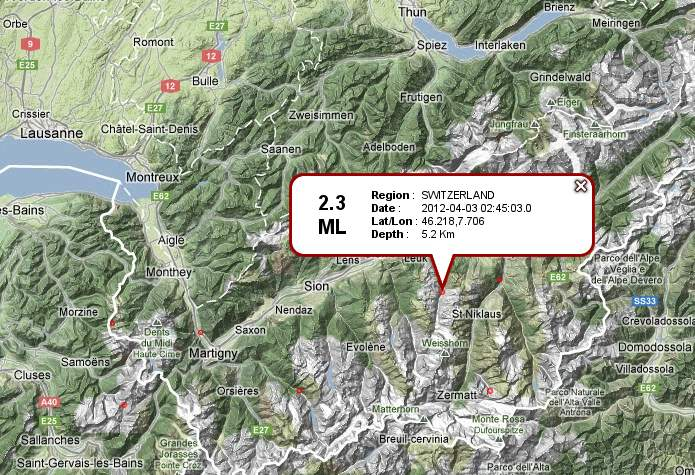
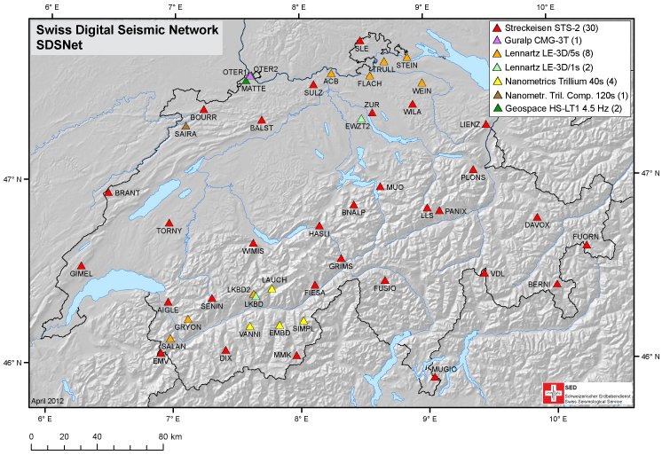

This practical intends to demonstrate how ObsPy can be used to develop workflows for data processing and analysis that have a short, easy to read and extensible source code. The overall task is to automatically estimate local magnitudes of earthquakes using data of the SED network. We will start with simple programs with manually specified, hard-coded values and build on them step by step to make the program more flexible and dynamic. Some details in the magnitude estimation should be done a little bit different technically but we rather want to focus on the general workflow here.


Fetch a list of events from EMSC for the region of Valais/SW-Switzerland on 3rd April of 2012. Use the Client provided in obspy.neries. Note down the catalog origin times, epicenters and magnitudes.
Modify the existing code and use the file LKBD.MSEED to read the original MiniSEED waveform data in counts. Set up two dictionaries containing the response information of both the original instrument (a LE3D-5s) and the Wood-Anderson seismometer in poles-and-zeros formulation. Please note that for historic reasons the naming of keys differs from the usual naming. Each PAZ dictionary needs to contain sensitivity (overall sensitivity of seismometer/digitizer combination), gain (A0 / normalization factor), poles and zeros. Check that the value of water_level is not too high, to avoid overamplified low frequency noise at short-period stations. After the instrument simulation, trim the waveform to a shorter time window around the origin time (2012-04-03T02:45:03) and calculate \(M_{lh}\) like before. Use the following values for the PAZ dictionaries:
LE3D-5s
Wood-Anderson
poles
-0.885+0.887j -0.885-0.887j -0.427+0j
-6.2832-4.7124j -6.2832+4.7124j
zeros
0j, 0j, 0j
0j
gain
1.009
1
sensitivity
167364000.0
2800
Instead of the hard-coded values, read the response information from a locally stored dataless SEED LKBD.dataless. Use the Parser of module obspy.xseed to extract the poles-and-zeros information of the used channel.
We can also request the response information from WebDC using the ArcLink protocol. Use the Client provided in obspy.arclink module (specify e.g. user=”sed-workshop@obspy.org”).
In this additional advanced exercise we can enhance the routine to be independent of a-priori known origin times by using a coincidence network trigger for event detection.
- fetch a few hours of Z component data for 6 stations in Valais / SW-Switzerland
- run a coincidence trigger like shown in the Trigger Tutorial
- loop over detected network triggers, store the coordinates of the closest station as the epicenter
- loop over triggers, use the trigger time to select the time window and use the network magnitude estimation code like before